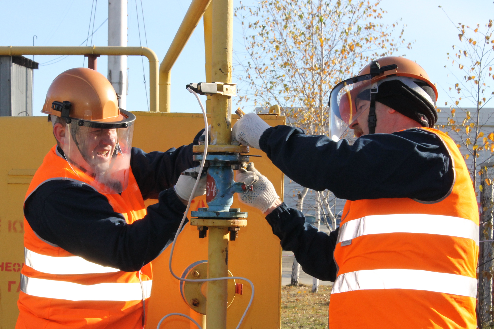

FAQ
Как оформить заявку на удаление старой учётной записи?
1. Через Обратную связь выберите тему «Вопросы по регистрации в личном кабинете, удаление учётной записи, восстановление пароля (показания не оставлять)».
2. Заполните все данные и отправьте сообщение с текстом «Прошу удалить мою старую учётную запись для регистрации новой».
3. После удаления старой учётной записи специалистом из Абонентского отдела Вы сможете перерегистрироваться.
2. Заполните все данные и отправьте сообщение с текстом «Прошу удалить мою старую учётную запись для регистрации новой».
3. После удаления старой учётной записи специалистом из Абонентского отдела Вы сможете перерегистрироваться.

FAQ
По указанным данным абонент не найден.
1. При первичной регистрации: проверьте правильность вводимых данных, либо обратитесь в Абонентский отдел.
2. При восстановлении пароля: вы указываете не тот адрес электронной почты, на который выполняли регистрацию. Через Обратную связь , выбрав тему «Вопросы по регистрации в личном кабинете, удаление учётной записи, восстановление пароля», заполните все данные и отправьте сообщение с текстом «Прошу удалить мою старую учётную запись для регистрации новой». После удаления старой учётной записи Вы сможете перерегистрироваться.
2. При восстановлении пароля: вы указываете не тот адрес электронной почты, на который выполняли регистрацию. Через Обратную связь , выбрав тему «Вопросы по регистрации в личном кабинете, удаление учётной записи, восстановление пароля», заполните все данные и отправьте сообщение с текстом «Прошу удалить мою старую учётную запись для регистрации новой». После удаления старой учётной записи Вы сможете перерегистрироваться.

FAQ
У меня несколько лицевых счетов.
На один адрес электронной почты можно регистрировать несколько лицевых счетов.

FAQ
Ошибка входа!
1. Подтвердите регистрацию, нажав ссылку из письма о регистрации. Убедитесь, что Вы правильно вводите логин и пароль. Обязательно используйте последний подтвержденный пароль. Если пароль сложный для повторения, не набирайте его с клавиатуры, а копируйте из сообщения в Вашей почте.
2. По-видимому, у Вас несколько Личных кабинетов, или же Вы в какой-то момент ввели неправильный номер лицевого счета (и/или, возможно, неправильный пароль) и Ваш браузер запомнил эти данные. Вам необходимо очистить память браузера и куки – это выполняется в настройках браузера. Если это сложно выполнить, попробуйте войти в Личный кабинет ПАО «Севастопольгаз» в другом браузере.
2. По-видимому, у Вас несколько Личных кабинетов, или же Вы в какой-то момент ввели неправильный номер лицевого счета (и/или, возможно, неправильный пароль) и Ваш браузер запомнил эти данные. Вам необходимо очистить память браузера и куки – это выполняется в настройках браузера. Если это сложно выполнить, попробуйте войти в Личный кабинет ПАО «Севастопольгаз» в другом браузере.

FAQ
Указанный абонент уже зарегистрирован в БД.
По-видимому, Вы ранее уже зарегистрировались. Воспользуйтесь функцией «Забыли пароль?». При этом убедитесь, что Вы указываете тот же самый адрес электронной почты. Если не помните, на какой адрес Вы регистрировались, то через Обратную связь , выбрав тему «Вопросы по регистрации в личном кабинете, удаление учётной записи, восстановление пароля», заполните все данные и отправьте сообщение с текстом «Прошу удалить мою старую учётную запись для регистрации новой». После удаления старой учётной записи Вы сможете перерегистрироваться.

FAQ
Указаны показания для временно отключенного счётчика.
Такое сообщение означает, что Ваш лицевой счет переведен на тариф. За разъяснениями следует обратиться в Абонентский отдел.

FAQ
Вкладка «Счётчики» и кнопка для занесения показаний отсутствует.
За разъяснениями следует обратиться в Абонентский отдел.

FAQ
Я не пользуюсь газом, но не могу ввести в Личном кабинете такие же показания, как и в предыдущем периоде.
В случае, если Вы не пользуетесь газом, Вам следует обратиться в Абонентский отдел и оформить заявление на временное отсутствие. Для этого обратитесь лично или отправьте заявку через Обратную связь, выбрав тему «Смена собственника, временное отсутствие».